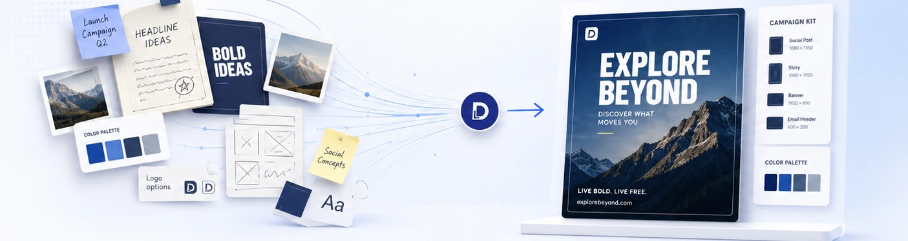

Clarify the goal, audience, platform, and required deliverables.
Creative that moves brands forward
Turn scattered ideas into campaign-ready design.
DesignLab helps brands turn ideas, drafts, and requests
into polished visuals, campaigns, and digital assets—fast.

Selected work across brands, campaigns, and institutions
Creative support, structured clearly
Choose the kind of support your project needs.
Select a category to see its common deliverables, ideal use, and next step.
Ongoing creative support
Design Packages
Planned social media and campaign visuals for brands that need consistent creative output.
- Static social media graphics
- Carousel posts and campaign sets
- Organized revisions and delivery
Selected capabilities
Creative support across three focused areas.
A practical creative process
From brief to ready-to-use output.
A clear workflow keeps revisions focused and the final delivery easier to manage.
Organize content, references, hierarchy, and visual direction.
Build the core visual, system, or campaign assets.
Apply feedback, prepare final sizes, and deliver clean files.

Studio notes
Grinding Daily: What Happens Behind the Work
A look at the current rhythm behind DesignLab—live client work, university campaigns, portfolio cleanup, admin tools, revisions, and the systems being built around the creative work.
Read the note →
Behind DesignLab
Created and directed by Jann Jaravata.
Graphic designer, social media manager, and creative developer working across campaigns, university communications, publication design, and practical web systems.
8+ yearsCreative experienceAdobe ACPCertified professionalRemote readyOrganized online workflow
Meet the creator →Selected pages and brands handled
Creative work across institutions, products, and growing brands.
Browse work connected to the pages and brands currently supported by DesignLab.
Panpacific UniversityInstitutional campaigns and university communications
→
CoziSleepE-commerce visuals and product campaigns
→
SoleProtectBrand and promotional design support
→
PlanoraProduct branding and social media planning app
→
PACEProgram advertising and infosession materials
→
Overdrive PHAutomotive content and visual direction
→